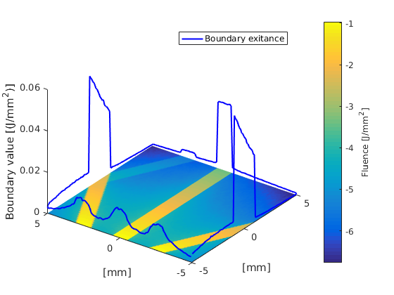

Setting boundary conditions and visualising the boundary solution: boundarytest.m
This example demonstrates how to set the exterior refractive index outside the mesh and how to plot the fluence and the exitance on the boundary.
Contents
Initialisation
xsize = 10; % width of the region [mm] ysize = 10; % width of the region [mm] dh = 0.1; % discretisation size [mm] vmcmesh = createRectangularMesh(xsize, ysize, dh); % create a rectangular mesh % Set constant optical parameters troughout the medium vmcmedium.absorption_coefficient = 0.15; % absorption coefficient [1/mm] vmcmedium.scattering_coefficient = 0.1; % scattering coefficient [1/mm] vmcmedium.scattering_anisotropy = 0.0; % scattering anisotropy parameter [unitless] vmcmedium.refractive_index = 1.3; % refractive index [unitless]
Find boundary elements on segment(s) of the boundary
% The arrays define four lines, drawn in the figure below, that are used % to obtain indices of the boundary elements. The first three are used to % set up light sources. The fourth line is used to set up a region with % a custom exterior refractive index. radius = xsize/2.0; line1_start = [0 5]; line2_start = [5 0]; line3_start = [0 -5]; line1_end = [-5 2.5]; line2_end = [-5 0]; line3_end = [-5 -2.5]; line_width = 1.0; boundary1 = findBoundaries(vmcmesh, 'direction', line1_start, line1_end, line_width); boundary2 = findBoundaries(vmcmesh, 'direction', line2_start, line2_end, line_width); boundary3 = findBoundaries(vmcmesh, 'direction', line3_start, line3_end, line_width); boundary4 = findBoundaries(vmcmesh, 'direction', line1_end, line1_start, line_width);

Create the boundary and set boundary conditions
% 'createBoundary' forms the boundary structure of the mesh. % If the medium is given as a third argument, 'createBoundary' will build % an array 'exterior_refractive_index' with no change in the refractive index % when the photon packets encounter a boundary (i.e. a boundary condition % with a matching reafractive index). vmcboundary = createBoundary(vmcmesh, vmcmedium); % Set the exterior refractive index at the third boundary segment to be higher than elsewhere vmcboundary.exterior_refractive_index(boundary4) = 1.8;
Set up light sources
% Set up three light sources at the boundary to the locations % returned by 'findBoundaries'. vmcboundary.lightsource(boundary1) = {'direct'}; vmcboundary.lightsource(boundary2) = {'direct'}; vmcboundary.lightsource(boundary3) = {'direct'}; % Calculate and normalise a direction vector for two of the lightsources % from the lines. dir1 = (line1_start - line1_end); dir2 = (line3_start - line3_end); dir1 = dir1/norm(dir1); dir2 = dir2/norm(dir2); % Use the line to set the direction vectors of the lines vmcboundary.lightsource_direction(boundary1,1) = dir1(1); vmcboundary.lightsource_direction(boundary1,2) = dir1(2); vmcboundary.lightsource_direction(boundary3,1) = dir2(1); vmcboundary.lightsource_direction(boundary3,2) = dir2(2); vmcboundary.lightsource_direction_type(boundary1) = {'absolute'}; vmcboundary.lightsource_direction_type(boundary3) = {'absolute'}; % Change the irradiance % % The total strength of the lightsources is 1 W and the strength % per unit distance is a constant. The sources 1 and 3 have the same length. % In direct lightsources, all photons are launched to the same direction % so tilting the lightsource increases the photon density in the beam it % emits. To keep the fluence constant in all the beams, the irradiance of % the tilted lightsources is reduced by a factor of \vec n dot \vec s, % where \vec n is the boundary normal and \vec s is the beam direction. vmcboundary.lightsource_irradiance(boundary1) = dot(dir1, [1 0]); vmcboundary.lightsource_irradiance(boundary2) = 1; vmcboundary.lightsource_irradiance(boundary3) = dot(dir2, [1 0]); % Notice that now the first light source is directed towards the third % boundary segment. Due to the refractive index mismatch, a total internal % refection will occur at the boundary.
Run the Monte Carlo simulation
solution = ValoMC(vmcmesh, vmcmedium, vmcboundary);
Initializing MC2D using 16 threads... Computing... ...done Done
Plot the solution
hold on; % The boundary solution is given as a constant fluence and extitance values % at each boundary element. % To plot the boundary fluence with plot3, an average coordinate of each % boundary element is calculated avgr = (vmcmesh.r(vmcmesh.BH(:, 1),:) + vmcmesh.r(vmcmesh.BH(:, 2),:))/2; h = plot3(avgr(:,1), avgr(:,2), (solution.boundary_exitance), 'b','LineWidth',1.5); % Draw the fluence in each element as before patch('Faces', vmcmesh.H, 'Vertices',vmcmesh.r, 'FaceVertexCData', log(solution.element_fluence), 'FaceColor', 'flat', 'EdgeColor','none'); xlabel('[mm]'); ylabel('[mm]'); c = colorbar; % create a colorbar c.Label.String = 'Fluence [J/mm^2]'; legend(h,{'Boundary exitance'}); % tilt the view az = -54; el = 34; view([az, el]); zlabel('Boundary value [(J/mm^2)]'); hold off